Concepts
Loom generates MIDI patterns one gesture at a time.
A gesture is a rhythmic grouping of notes.
For example, consider this phrase, displayed on a flat grid:

It could be expressed as a sequence of gestures of one or more notes each:

…where the notes (and rests) within each gesture are always of equal duration.
Every instance of the Loom plugin is a player.
Players may hand off control amongst one another. (See Phrasing below.)
A generator is a random number generator:
The bars represent a normal distribution of random numbers from low to high.
The mean shifts the probability from low to high (meaning based on context).
The deviation expands the probability that the generated number will fall further from the mean.